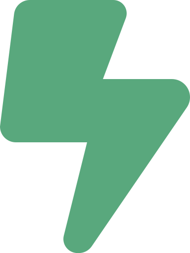

Portada
Arquitectura de Software
Semana 9 — Catálogo POSA: BFF, Circuit Breaker, SOFEA
Universidad de Antioquia · Ingeniería de Sistemas · 2554608 · 2026-2

Apertura
Un servicio caído.
Miles de peticiones esperando en fila.

Caso · Ficha técnica
SoundCloud y el patrón BFF, 2015
| Patrón | Backends For Frontends (BFF) |
|---|---|
| Documentado por | Phil Calçado, ingeniero de SoundCloud |
| Publicación | Post de blog "Pattern: Backends For Frontends" (2015) |
| Origen | Experiencia real del equipo de SoundCloud construyendo su app móvil y su reproductor web |
| Problema | Un único API genérico no lograba evolucionar con la velocidad que cada frontend necesitaba |
Caso · El problema de coordinación
Un API para todos, un cuello de botella para todos
SoundCloud tenía un API genérico que servía tanto a la app móvil como al reproductor web. En la práctica, eso significaba:
- Cada cambio al API debía negociarse entre todos los equipos de frontend, aunque solo uno de ellos lo necesitara.
- El móvil recibía payloads pensados para desktop: más datos de los que necesitaba, en una red más lenta y un dispositivo más limitado.
- Ningún equipo podía evolucionar su experiencia sin bloquear o esperar a los demás.
El equipo de SoundCloud resolvió esto dándole a cada frontend su propio backend, adaptado exactamente a lo que ese cliente necesita.
Transición
De un API compartido a un backend por cliente
Lo que Phil Calçado documentó a partir de esa experiencia se convirtió en un patrón con nombre propio, hoy ampliamente usado en la industria cuando un mismo sistema debe servir a clientes muy distintos entre sí: web, app móvil, smart TV, asistentes de voz.
Ese patrón es Backend For Frontend (BFF).
Concepto
BFF: un backend dedicado por tipo de cliente
En vez de exponer un único API genérico que intenta servir a todos los frontends por igual, el patrón Backend For Frontend propone crear un backend propio y optimizado para cada tipo de cliente: uno para la app móvil, otro para la web, otro para la smart TV.
- Cada BFF conoce las necesidades exactas de su cliente y devuelve solo lo que ese cliente necesita, en el formato que le conviene.
- Los BFF suelen ser una capa delgada que orquesta llamadas a servicios/microservicios de backend más genéricos, sin duplicar la lógica de negocio de fondo.
- El equipo dueño de cada frontend puede ser también dueño de su BFF, sin depender de un API monolítico compartido.
Concepto · Ventajas y limitaciones
Lo que BFF gana — y lo que cuesta
| Ventajas | Limitaciones |
|---|---|
| Cada equipo de frontend controla su propio backend, sin negociar cambios con los demás equipos | Riesgo de duplicar lógica entre distintos BFFs si no se gestiona bien qué vive en cada uno |
| Cada cliente recibe exactamente los datos que necesita, evitando payloads sobredimensionados | Más servicios que mantener, desplegar y monitorear que con un único API compartido |
| Los equipos evolucionan su experiencia de cliente a su propio ritmo | Requiere disciplina para decidir qué lógica es realmente específica del cliente y qué debería vivir en un servicio compartido |
Transición
¿Qué pasa cuando el servicio del otro lado falla?
BFF resuelve a quién le habla cada cliente. Pero cada BFF, y cada microservicio de la sesión pasada, depende de llamar a otros servicios remotos — y esos servicios remotos a veces fallan o se vuelven lentos.
Sin protección, un solo servicio caído puede tumbar en cascada a todos los que dependen de él. El patrón que evita eso es Circuit Breaker.
Caso · Ficha técnica (1/2)
"Release It!", Michael Nygard, 2007
| Libro | Release It! Design and Deploy Production-Ready Software |
|---|---|
| Autor | Michael Nygard |
| Año | 2007 |
| Aporte | Formaliza el patrón de software Circuit Breaker como estabilidad de producción |
| Inspiración del nombre | Los disyuntores eléctricos reales, que "abren" el circuito para proteger la instalación cuando detectan una falla |
Caso · Ficha técnica (2/2)
Hystrix, Netflix, 2012
| Librería | Hystrix |
|---|---|
| Empresa | Netflix |
| Liberada como open source | 2012 |
| Contexto | Parte de la migración de Netflix a microservicios (la misma que vimos la sesión pasada), para evitar que cientos de servicios interdependientes cayeran en cascada |
| Impacto | La implementación más famosa y ampliamente adoptada del patrón Circuit Breaker en la industria |
Concepto
Circuit Breaker: dejar de intentar lo que ya falla
El patrón Circuit Breaker envuelve una llamada a un servicio remoto. Cuando detecta fallos repetidos en ese servicio, "abre el circuito": deja de intentar la llamada y devuelve de inmediato un error o un valor de respaldo (fallback), en vez de intentarlo de nuevo.
- Evita que las peticiones se queden esperando timeouts repetidos contra un servicio que ya sabemos que está caído.
- Libera recursos (hilos, conexiones) que de otro modo quedarían bloqueados esperando una respuesta que no va a llegar.
- Contiene el fallo: un servicio caído no arrastra consigo a todos los servicios que dependen de él.
Concepto · Cómo funciona
Tres estados, igual que un disyuntor eléctrico
| Estado | Comportamiento |
|---|---|
| Cerrado | Las llamadas pasan normalmente; el circuito cuenta fallos y éxitos |
| Abierto | Tras superar el umbral de fallos, deja de llamar al servicio y responde de inmediato con error o fallback |
| Semi-abierto | Después de un tiempo de espera, deja pasar algunas llamadas de prueba; si funcionan, vuelve a cerrado — si no, vuelve a abrirse |
Concepto · Ventajas y limitaciones
Lo que Circuit Breaker gana — y lo que cuesta
| Ventajas | Limitaciones |
|---|---|
| Evita fallos en cascada entre servicios interdependientes | Requiere definir bien el umbral: cuántos fallos antes de abrir el circuito |
| Protege recursos (hilos, conexiones) al no esperar timeouts repetidos | Necesita una estrategia de fallback sensata — un fallback mal diseñado puede ocultar el problema en vez de mitigarlo |
| Da tiempo al servicio caído para recuperarse sin recibir más carga | Mal configurado (umbral muy bajo), puede abrir el circuito innecesariamente ante fallos pasajeros |
Transición
¿Y quién arma la experiencia que ve el usuario?
BFF define quién atiende a cada cliente. Circuit Breaker protege esas llamadas cuando algo falla. Falta una pregunta: en 3-capas tradicional (semana 7), el servidor de aplicación arma el HTML que ve el usuario. ¿Qué pasa si esa responsabilidad se mueve por completo al cliente?
Concepto
SOFEA: el cliente arma la experiencia
Service-Oriented Front-End Architecture (SOFEA) es un término que ganó tracción a fines de los 2000s para nombrar una tendencia: mover toda la lógica de presentación y orquestación de la interfaz al cliente (navegador o app), y dejar que el servidor exponga solo servicios de datos/negocio puros — sin un servidor de aplicación intermedio que genere HTML.
A diferencia de BFF (Calçado, 2015) o Circuit Breaker (Nygard, 2007), SOFEA no tiene una única fuente canónica ni una atribución de autor tan documentada — se presenta aquí como el nombre que la industria le dio a una tendencia observable, no como un patrón con ficha técnica tan precisa como los dos anteriores.
Concepto · De SOFEA a lo que usamos hoy
El antecesor conceptual de las SPA
SOFEA es, en esencia, el nombre temprano de una idea que hoy conocemos mejor por sus herederos directos:
- Los frameworks de Single Page Applications (SPA) — Angular, React, Vue — llevan al extremo la idea de SOFEA: el cliente descarga una aplicación completa y consume servicios (APIs) para todos sus datos.
- JAMStack (que verán en la semana 10) continúa esa misma tendencia de separar por completo el front-end de los servicios de backend.
Contraste con 3-capas tradicional (semana 7): ahí el servidor de aplicación genera la vista y se la entrega lista al cliente. En SOFEA, el servidor solo entrega datos crudos vía servicios — es el cliente quien construye la interfaz.
Tensión conceptual
Los tres patrones, funcionando juntos
En un sistema real estos tres patrones no compiten entre sí — se combinan:
- La app móvil llama a su propio BFF, que le devuelve exactamente los datos que necesita.
- Ese BFF usa Circuit Breaker para llamar a los microservicios de backend, protegiéndose de fallos en cascada si alguno está caído.
- Mientras tanto, el frontend web es una aplicación SOFEA/SPA que arma su propia interfaz consumiendo esos mismos servicios directamente, sin servidor de aplicación intermedio.

Interacción
¿Qué patrón resuelve cada problema?
Para cada situación, identifiquen qué patrón de los tres aplica y por qué:
- Un microservicio de inventario empieza a responder muy lento y los servicios que dependen de él se quedan sin hilos disponibles.
- Una app de smart TV recibe el mismo payload gigante que la versión web, pensado para pantallas y conexiones de escritorio.
- Un frontend web moderno descarga una aplicación completa una sola vez y desde ahí consume servicios directamente, sin recargar HTML del servidor.
5 minutos · respondan en voz alta o en el chat
Síntesis
Ideas clave de hoy — y cierre del catálogo POSA
- BFF (Calçado, SoundCloud, 2015) da a cada tipo de cliente un backend propio, evitando payloads genéricos y desbloqueando a los equipos de frontend.
- Circuit Breaker (Nygard, 2007; Hystrix/Netflix, 2012) protege a un sistema de fallos en cascada, cortando llamadas a un servicio que ya sabemos que falla.
- SOFEA mueve la lógica de presentación por completo al cliente — antecesor conceptual de las SPA y de JAMStack.
Con estos tres patrones cerramos el catálogo POSA completo de la Unidad 2, visto en seis sesiones: Pipes & Filters, Blackboard, Broker, MVC, Batch, Cliente/Servidor N-capas, Layers, Microkernel, SOA, Hexagonal, Microservicios, WebHooks, BFF, Circuit Breaker y SOFEA — quince patrones en total.
Cierre
Para la próxima semana
- Repasar los quince patrones del catálogo POSA y, para cada uno, identificar un sistema real (propio o conocido) donde lo reconozcan.
- Pensar en el proyecto de Fábrica Escuela: ¿hay algo parecido a un BFF, a un circuit breaker, o a una arquitectura SOFEA en su solución actual?
La próxima sesión da un paso atrás del catálogo de patrones puntuales para ver el panorama completo: Estilos Arquitectónicos.